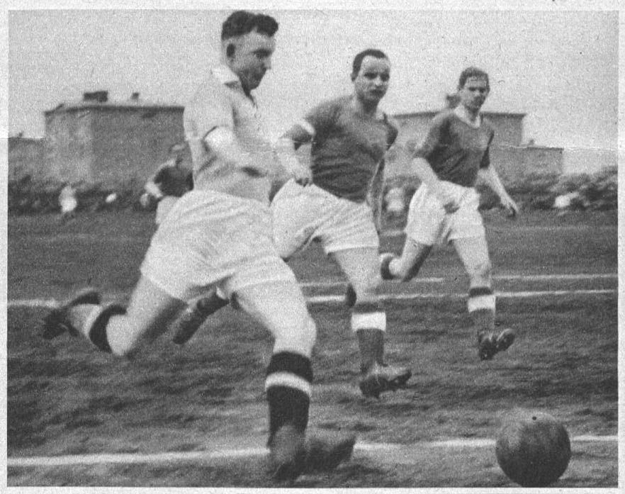
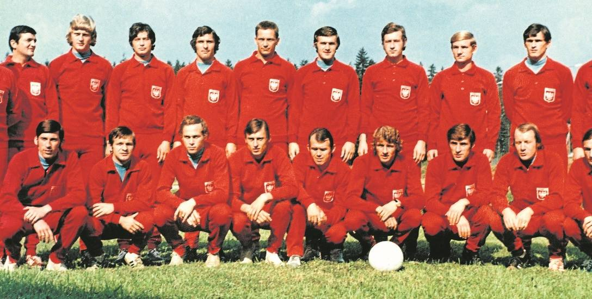
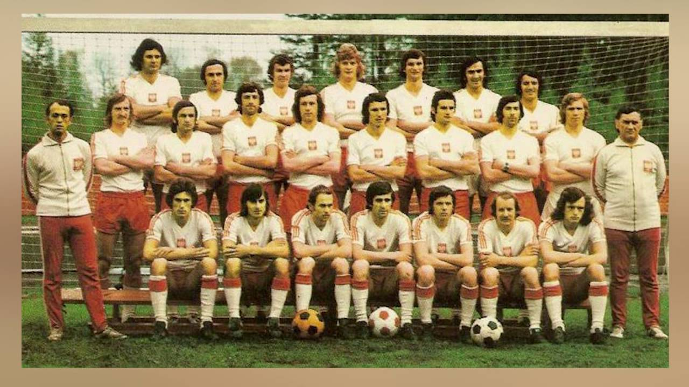
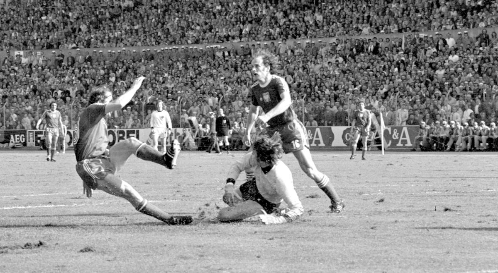
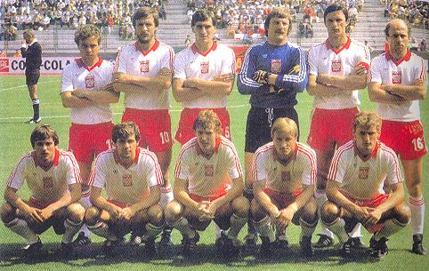
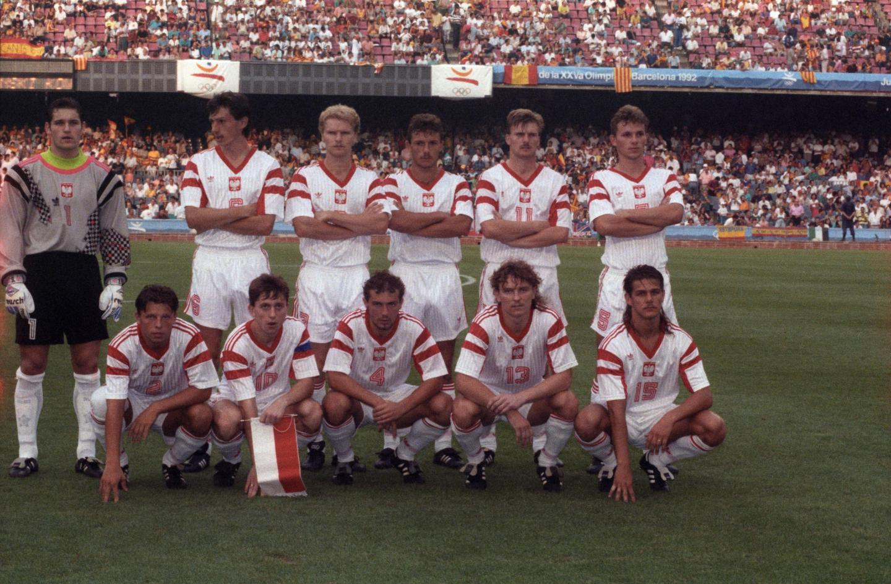
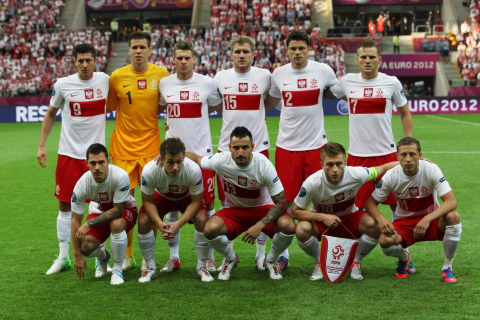
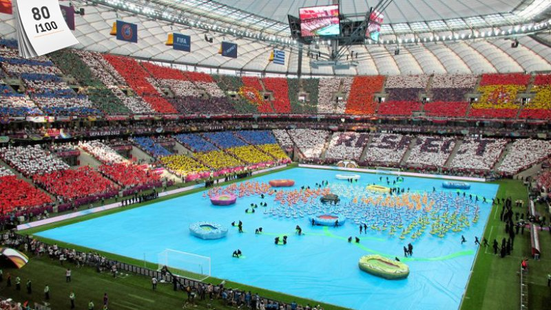

III MŚ w piłce nożnej Francja 1938: Ernest Wilimowski zdobywca 4 goli w meczu Polska - Brazylia 5:6

Złoty medal polskiej drużyny w piłce nożnej na XX IO w Monachium 1972

III miejsce na X MŚ w piłce nożnej, RFN 1974

Srebrny medal polskiej drużyny w piłce nożnej na XXI IO w Montrealu 1976

III miejsce na XII MŚ w piłce nożnej w Hiszpanii 1982

II miejsce - srebrny medal na XXV IO Barcelona 1992

Inauguracja Euro 2012: mecz otwarcia Polska - Grecja 8.06.2012

Mistrzostwa Europy w piłce nożnej EURO 2012: Stadion Narodowy w Warszawie
